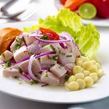
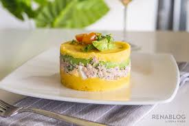
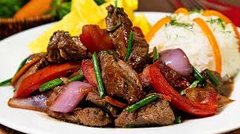

El ceviche, sebiche o seviche es un plato peruano consistente de carne de pescado marinada ―pescado, mariscos o ambos― en aliños cítricos, reconocido por la Unesco como expresión de la cocina tradicional peruana y patrimonio cultural inmaterial de la humanidad.
La causa a la limeña, causa limeña o simplemente causa, es un entrante típico y muy extendido de la gastronomía del Perú, que tiene origen precolombino.
El lomo saltado es un plato típico de la gastronomía del Perú consistente en carne de res, arroz cocido y papas fritas. Es uno de los platos más consumidos popularmente en el Perú.
